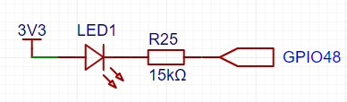
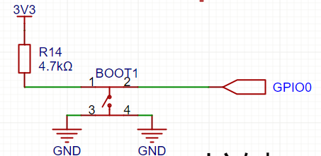

<!DOCTYPE lake>
<p data-lake-id="u80ed65d9" id="u80ed65d9"><span data-lake-id="u5d0ab2d1" id="u5d0ab2d1">本节内容主要讲解gpio的两个基础功能,分别为</span></p><ol list="u8b489fef"><li data-lake-id="u0b8236ed" fid="u119072dd" id="u0b8236ed"><span data-lake-id="ua96a1426" id="ua96a1426">gpio输出: 控制引脚电平状态</span></li><li data-lake-id="u5d3aea10" fid="u119072dd" id="u5d3aea10"><span data-lake-id="uedd25183" id="uedd25183">gpio输入: 读取引脚当前电平状态</span></li></ol><p data-lake-id="u8f847bbb" id="u8f847bbb"><br/></p><p data-lake-id="u75eace39" id="u75eace39"><span data-lake-id="uf4aaecf3" id="uf4aaecf3">核心板原理图</span></p><a class="yuque-card-link" href="https://www.yuque.com/attachments/yuque/0/2025/pdf/27903758/1742054043444-35ac38c5-0b31-48be-a35a-9f913bd49199.pdf">localdoc：SCH_ESP32_S3.pdf</a><p data-lake-id="u7dd890de" id="u7dd890de"><span data-lake-id="u042dc291" id="u042dc291">​</span><br/></p><h2 data-lake-id="AW4KF" id="AW4KF"><span data-lake-id="u12586c3c" id="u12586c3c">gpio输出:点灯大师</span></h2><a class="yuque-card-link" href="https://player.bilibili.com/player.html?bvid=BV1choKYKEb4&amp;p=2&amp;page=2&amp;autoplay=0" rel="noopener noreferrer" target="_blank">thirdparty：thirdparty</a><p data-lake-id="uf07bd4e8" id="uf07bd4e8" style="text-align: center"></p><p data-lake-id="u79355cf0" id="u79355cf0" style="text-align: left"><span data-lake-id="u46c21c67" id="u46c21c67">我们通过点亮开发板上面的灯来快速学习GPIO的输出,通过上面的原理图我们知道,只要48号引脚输出低电平,LED灯就可以亮起</span></p><p data-lake-id="u1d20cc34" id="u1d20cc34"><br/></p><h3 data-lake-id="sDkev" id="sDkev"><span data-lake-id="u2b999369" id="u2b999369">点亮灯</span></h3><ol list="u19fe0544"><li data-lake-id="u05319262" fid="ubad78aa2" id="u05319262"><span data-lake-id="u79524f60" id="u79524f60">导包</span></li></ol><span class="yuque-card-unsupported">[codeblock]</span><ol list="u19fe0544" start="2"><li data-lake-id="uf089c56e" fid="ubad78aa2" id="uf089c56e"><span data-lake-id="ud8eaebf7" id="ud8eaebf7">驱动电平</span></li></ol><span class="yuque-card-unsupported">[codeblock]</span><p data-lake-id="ub79be6c6" id="ub79be6c6"><br/></p><h3 data-lake-id="MCyNj" id="MCyNj"><span data-lake-id="ufca1f2e7" id="ufca1f2e7">闪烁的灯</span></h3><p data-lake-id="u698d08e1" id="u698d08e1"><span data-lake-id="u3c92c964" id="u3c92c964">顾名思义,就是让灯一闪一闪,我们只要将灯点亮,延迟一定的时间之后关闭, 再延迟一定的时间再亮起, 我们就可以实现灯的亮灭操作.</span></p><ol list="u3e5fe5d2"><li data-lake-id="u82d2616d" fid="u66eaaa4a" id="u82d2616d"><span data-lake-id="ub88ca620" id="ub88ca620">导包</span></li></ol><span class="yuque-card-unsupported">[codeblock]</span><ol list="u39c2330d" start="2"><li data-lake-id="u833d33e6" fid="uadd0d190" id="u833d33e6"><span data-lake-id="u0717faf1" id="u0717faf1">初始化引脚</span></li></ol><span class="yuque-card-unsupported">[codeblock]</span><ol list="u67834fb3" start="3"><li data-lake-id="u8b3fec12" fid="ue3ed8a6e" id="u8b3fec12"><span data-lake-id="ua3f57d18" id="ua3f57d18">编写驱动逻辑</span></li></ol><span class="yuque-card-unsupported">[codeblock]</span><p data-lake-id="ue0e95549" id="ue0e95549"><br/></p><p data-lake-id="u22c48d0c" id="u22c48d0c"><span data-lake-id="ua1109ae8" id="ua1109ae8">总结：点灯操作虽然简单，但是它几乎是每一个电子设备上面都能看到的功能，学会了点灯，我们就可以利用代码去控制很多设备。</span></p><h3 data-lake-id="mEGgQ" id="mEGgQ"><br/></h3><p data-lake-id="ue01898d9" id="ue01898d9"><br/></p><h2 data-lake-id="Bjatq" id="Bjatq"><span data-lake-id="ufc059f95" id="ufc059f95">gpio输入: 按键状态读取</span></h2><a class="yuque-card-link" href="https://player.bilibili.com/player.html?bvid=BV1choKYKEb4&amp;p=3&amp;page=3&amp;autoplay=0" rel="noopener noreferrer" target="_blank">thirdparty：thirdparty</a><p data-lake-id="u2ec9d6a6" id="u2ec9d6a6"><span data-lake-id="u5a0145f4" id="u5a0145f4">gpio的输入主要是让我们可以通过代码去获取设备的状态，信息等，以便于我们可以感知外部的物理世界。下面我们通过案件的例子来获取外部物理世界的变化。</span></p><p data-lake-id="ud9f10556" id="ud9f10556" style="text-align: center"></p><p data-lake-id="u1edd09d9" id="u1edd09d9" style="text-align: left"><span data-lake-id="ueb543160" id="ueb543160">仔细阅读上面原理图,我们不难看出GPIO0的默认电平是3v3, 属于高电平. 当我们将按键按下的时候,  GPIO0接到了GND, 此时它的电平将会是低电平.</span></p><p data-lake-id="ua724452f" id="ua724452f" style="text-align: left"><span data-lake-id="ub2814f69" id="ub2814f69">​</span><br/></p><p data-lake-id="u78583973" id="u78583973" style="text-align: left"><span data-lake-id="udecb620b" id="udecb620b">我们可以采用GPIO输入的方式来读取GPIO0引脚当前的状态</span></p><ol list="uc7048e94"><li data-lake-id="ud4bcafa5" fid="u0eb3cfb3" id="ud4bcafa5" style="text-align: left"><span data-lake-id="u95270025" id="u95270025">导包</span></li></ol><span class="yuque-card-unsupported">[codeblock]</span><ol list="uc7048e94" start="2"><li data-lake-id="u68106827" fid="u0eb3cfb3" id="u68106827" style="text-align: left"><span data-lake-id="u0f9f4a47" id="u0f9f4a47">初始化引脚，</span></li></ol><span class="yuque-card-unsupported">[codeblock]</span><ol list="uc7048e94" start="3"><li data-lake-id="ua25f5757" fid="u0eb3cfb3" id="ua25f5757" style="text-align: left"><span data-lake-id="u737f5000" id="u737f5000">读取值</span></li></ol><span class="yuque-card-unsupported">[codeblock]</span><p data-lake-id="u3aff996b" id="u3aff996b"><br/></p><p data-lake-id="u36125e31" id="u36125e31"><span data-lake-id="u965dbb56" id="u965dbb56">总结：gpio的输入，是我们利用电子设备去捕获外部世界状态的变化，它也是我们嵌入式开发中非常常见的功能。</span></p><p data-lake-id="uae114aba" id="uae114aba"><span data-lake-id="uac237fe3" id="uac237fe3">​</span><br/></p>